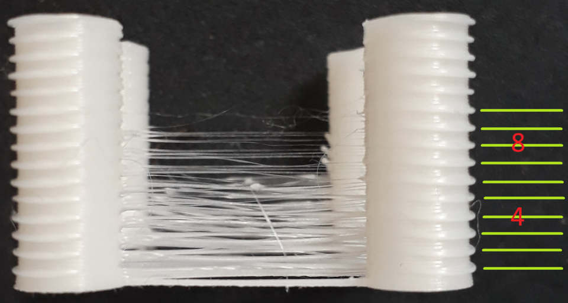

Calibrage de la rétraction |
|
Il est préférable d'avoir fait l'étalonnage du débit et de la température. Cette calibration vous aidera à choisir la bonne longueur de rétraction pour votre extrudeuse et le filament actuel.
Ce test imprimera une pièce d'essai avec une longueur de rétraction croissante pour chaque millimètre imprimé dans l'axe z.
Si vous avez une extrudeuse en direct drive, il est préférable d'essayer avec un incrément de 0,1 mm et une hauteur d'environ 15 mm, car il n'est pas courant d'avoir besoin de plus d'un mm de rétraction.
Si vous avez une extrudeuse de type Bowden, il est préférable d'essayer avec un incrément de 0,5 mm et une hauteur d'environ 15 mm, car il n'est pas rare d'avoir besoin de plus de 6 mm de rétraction. Vous pouvez également utiliser un incrément de 0,2 mm et une hauteur supérieure. Faites attention, car une longueur de rétraction élevée augmentera considérablement le risque d'obstruction de la buse si vous en avez beaucoup.
Par défaut, il utilise la température actuelle pour un seul test. Il n'est donc pas nécessaire d'y toucher, à moins que vous ne souhaitiez également optimiser la température pour éviter la formation de cordes.
Dans l'étalonnage de la température, vous avez obtenu un intervalle de température où votre impression est "suffisamment bonne".
Ici, vous voulez commencer à la température la plus élevée acceptable. Si vous l'avez déjà définie dans la température de votre filament, vous pouvez conserver "actuelle" comme paramètre de la température de départ. Si vous ne l'avez pas encore défini, sélectionnez la température maximale dans le champ 'Température de départ'.
Après cela, choisissez une option dans le champ "Dim. Température" qui ne réduira pas la température trop bas. "3x10" signifie qu'il imprimera trois tests, le premier à la température maximale et les autres avec une température inférieure de 10C.
Lorsque les pièces d'essai sont imprimées, vous pouvez compter le millimètre grâce aux stries situées sur les cotés des tours d'impression. Je les compte avec mon ongle. Quand vous êtes à la hauteur où il n'y a plus de cordes, vous pouvez noter le nombre de millimètres. Multipliez-le par votre paramètre de pas (0,1, 0,2, 0,5 ou 1) et vous avez votre nombre de longueur de rétraction. Vous pouvez ajouter 20% de longueur supplémentaire pour avoir une petite marge.
Si vous disposez de plusieurs tirages à des températures différentes, vous devez choisir le meilleur tirage, celui qui présente le moins de fil, à moins que la diminution du filage ne soit pas assez importante pour justifier la baisse de température.
|  | Dans cette impression, le dernier petit cordon se produit à la hauteur de ~10. Comme j'ai utilisé un pas de 0,5, cela signifie que j'ai besoin d'au moins 5mm de rétraction, mais je vais le régler à 6 pour être sûr d'enlever presque tous les fil. |
La vitesse de rétraction doit être réglée à la valeur maximale que votre extrudeuse, vos pilotes et votre firmware peuvent supporter de manière fiable, avec une marge de sécurité. 50mm/s pour la rétraction et 20mm/s pour la détraction est un bon début pour le PLA.
Licence pour les modèles utilisés pour cet essai de calibration: CC BY-SA 3.0